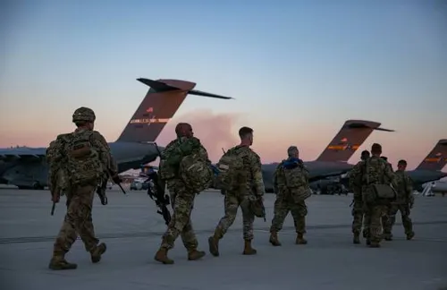

Únete a la lucha por la democracia y el orden
Nacidos de las cenizas del Refugio 15, la RNC se ha levantado como el faro de la civilización en el yermo. Desde Shady Sands, hemos crecido para proteger a todos los ciudadanos de California.
Creemos en el estado de derecho y la libertad personal. A diferencia de las tribus salvajes o los dictadores, ofrecemos un gobierno representativo donde cada voz cuenta para reconstruir el mundo.
Nuestros valientes soldados patrullan el desierto de Mojave para mantener las carreteras seguras. Luchamos contra asaltantes y la Legión para asegurar un futuro pacífico para tus hijos.
Los Rangers de la RNC son la élite, temidos por los tiranos y respetados por el pueblo. Son la punta de lanza en nuestra misión de restaurar la paz y la justicia en América.